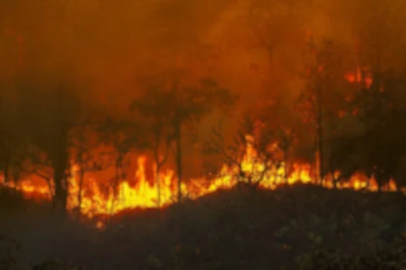

As queimadas têm consequências ambientais e climáticas severas. Em primeiro lugar, elas destroem habitats naturais, levando à perda de biodiversidade. Muitas espécies de plantas e animais dependem dos ecossistemas florestais para sobreviver, e o fogo pode levar à extinção de espécies ameaçadas ou endêmicas. Além disso, as queimadas liberam grandes quantidades de dióxido de carbono (CO₂) e outros gases de efeito estufa na atmosfera, contribuindo para o aquecimento global. As florestas, que atuam como importantes sumidouros de carbono, são, assim, convertidas em fontes de emissões de gases.
A destruição da vegetação nativa e o empobrecimento do solo podem reduzir a produtividade agrícola. As queimadas prejudicam a capacidade do solo de sustentar cultivos e pastagens, resultando em menores rendimentos e em um aumento nos custos de produção devido à necessidade de adubação e irrigação adicionais. Isso pode afetar a segurança alimentar e a renda dos produtores rurais.

Em uma entrevista com a rede Globo um especialista respondeu as dúvidas recorrentes sobre essa questão: As queimadas no Brasil são um problema complexo e multifacetado. Em grande parte, elas são impulsionadas por atividades humanas, principalmente a expansão agrícola e a pecuária. O desmatamento para abrir novas áreas de cultivo ou pastagem frequentemente envolve a queima da vegetação nativa. Essas queimadas são uma prática tradicional, mas quando realizadas de maneira desordenada e em larga escala, têm consequências devastadoras.
Para informações e noticias desta entrevista acesse o site do g1
Avançar para a página 02 para acessar o audio da reportagem da CNN sobre as queimadas do Brasil
Caso queira acessar as entrevistas citadas acima é aceesar o link